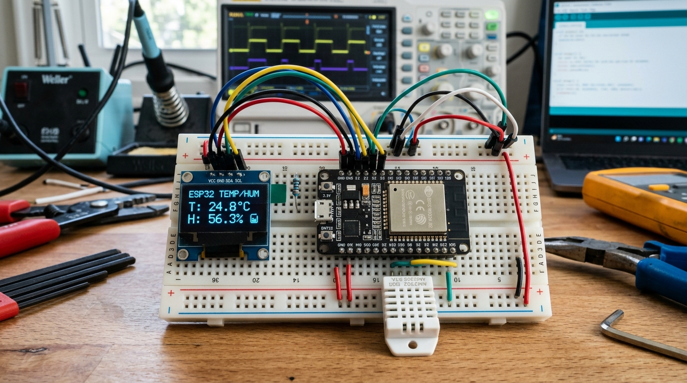
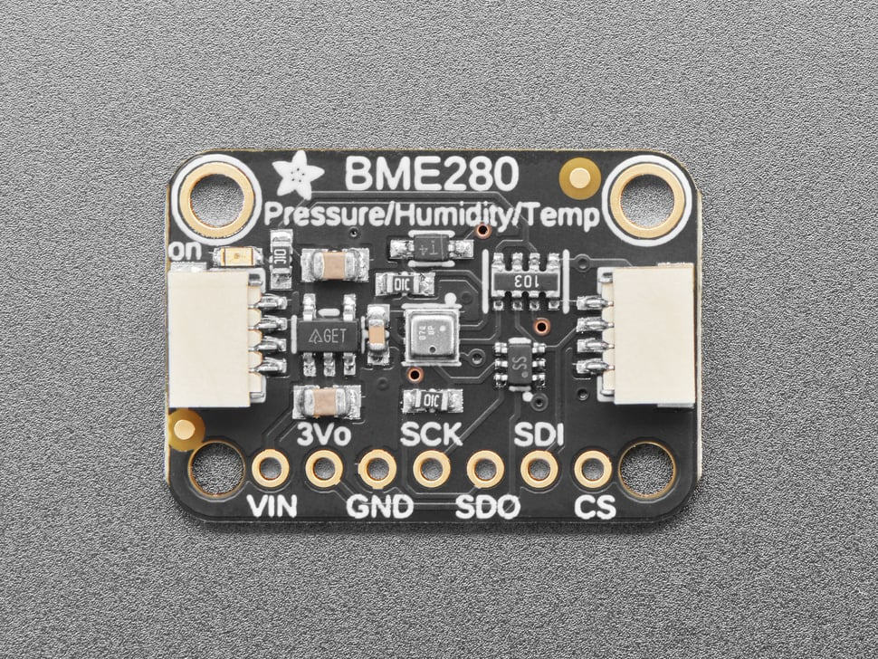
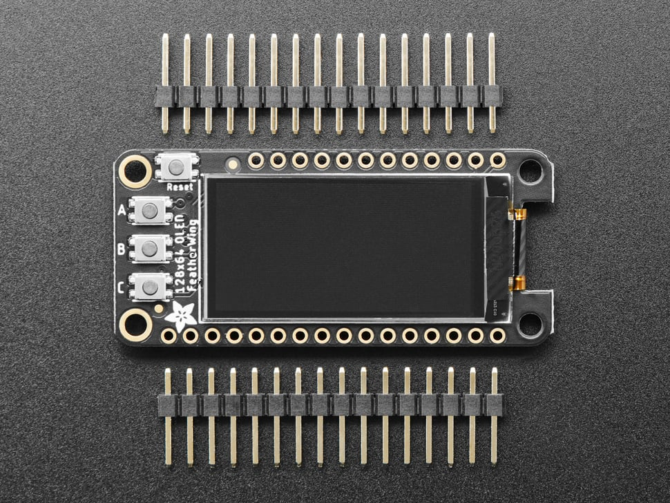
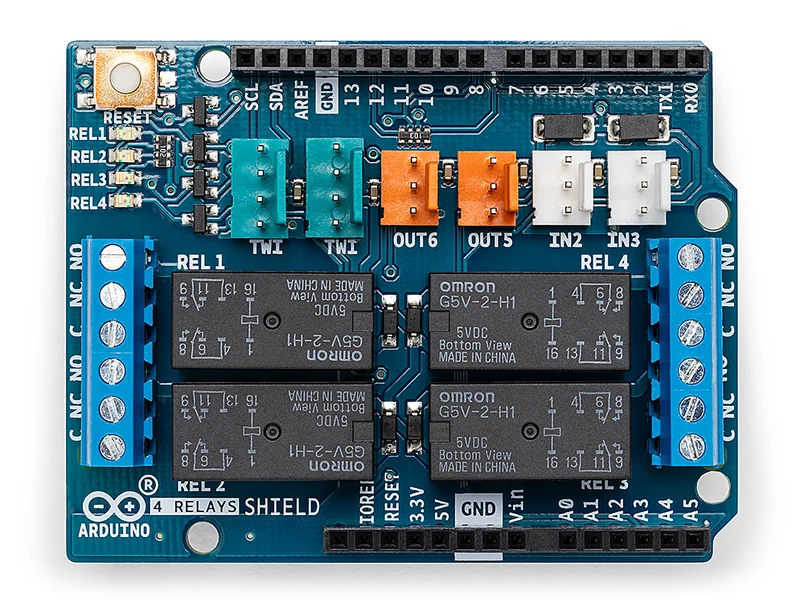
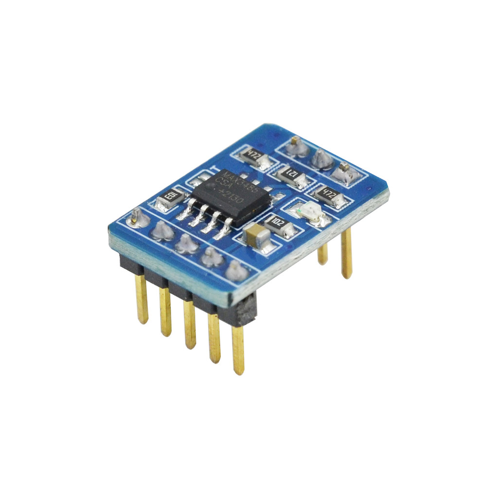
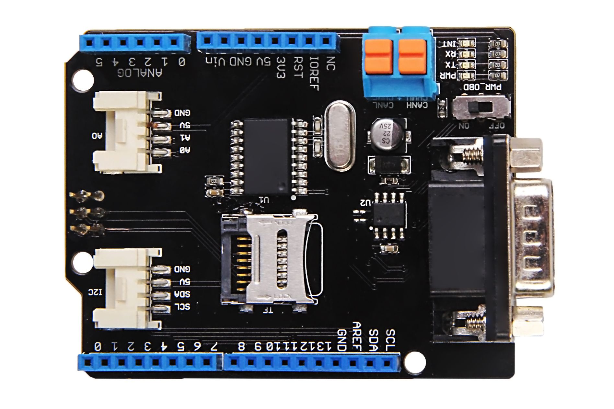

1. Hướng Dẫn Cài Đặt Môi Trường Phát Triển (IDE & Driver)
Để bắt đầu nạp code cho các bo mạch vi điều khiển tại STEM IoT Shop, bạn cần chuẩn bị môi trường phần mềm chuẩn hóa theo các bước sau:
1.1. Cài đặt Arduino IDE 2.x hoặc VS Code + PlatformIO
- Arduino IDE 2.x: Phiên bản mới nhất với tính năng tự động gợi ý code (Auto-complete) và trình gỡ lỗi trực quan. Tải tại trang chủ Arduino.cc.
- PlatformIO (VS Code Extension): Khuyên dùng cho các kỹ sư lập trình dự án lớn, hỗ trợ quản lý thư viện độc lập và biên dịch siêu tốc.
1.2. Cài đặt Driver giao tiếp USB-to-UART
Hầu hết các bo mạch nạp chương trình qua chip cầu nạp USB-UART. Nếu cắm cáp USB vào máy tính mà không nhận cổng COM, hãy cài đặt đúng driver:
| Chip cầu nạp | Dòng bo mạch phổ biến | Tình trạng nhận diện | Link tải driver chuẩn |
|---|---|---|---|
| CH340G / CH340C | Arduino Uno R3 SMD, ESP8266 NodeMCU, ESP32 DevKit | Cần cài driver WCH | WCH CH341SER Driver |
| CP2102 / CP2104 | ESP32 NodeMCU Silicon Labs, Adafruit Boards | Win 10/11 tự nhận hoặc cài Silicon Labs | Silicon Labs VCP Driver |
| FTDI FT232RL | Arduino Nano chính hãng, Module FTDI | Tự động nhận trên Windows Update | FTDI Chip VCP Driver |
2. Bộ Source Code Mẫu Chuẩn Cho Dự Án Thực Chiến
2.1. Cấu hình Board ESP32 trong Arduino IDE
Vào File -> Preferences, dán URL sau vào ô Additional Boards Manager URLs:
https://raw.githubusercontent.com/espressif/arduino-esp32/gh-pages/package_esp32_index.json
Sau đó vào Tools -> Board -> Boards Manager, gõ esp32 và nhấn
Install.
2.2. Code mẫu 1: Đọc cảm biến quang trở & Tự động bật đèn LED (ADC & PWM)
Ứng dụng điều khiển chiếu sáng thông minh trong nông nghiệp và nhà thông minh:
/*
* STEM IoT Shop - Code mẫu đọc quang trở (LDR) và điều khiển LED
* Sử dụng chân Analog A0 và chân PWM D9
*/
const int LDR_PIN = A0; // Chân đọc tín hiệu điện áp từ quang trở
const int LED_PIN = 9; // Chân xuất xung PWM điều khiển độ sáng LED
const int THRESHOLD = 500; // Ngưỡng phát hiện trời tối (0 - 1023)
void setup() {
Serial.begin(115200);
pinMode(LED_PIN, OUTPUT);
Serial.println(">>> Hệ thống cảm biến ánh sáng khởi động...");
}
void loop() {
int sensorValue = analogRead(LDR_PIN);
Serial.print("Cường độ ánh sáng (ADC 10-bit): ");
Serial.println(sensorValue);
if (sensorValue < THRESHOLD) {
// Trời tối -> Bật đèn với độ sáng tăng dần
int brightness = map(sensorValue, 0, THRESHOLD, 255, 50);
analogWrite(LED_PIN, brightness);
} else {
// Trời sáng -> Tắt đèn
analogWrite(LED_PIN, 0);
}
delay(200);
}
2.3. Code mẫu 2: Kết nối Wi-Fi & Gửi dữ liệu cảm biến lên Cloud (ESP32)
Đoạn code kết nối Wi-Fi chuẩn công nghiệp, tự động kết nối lại khi mất mạng (Auto-reconnect):
#include <WiFi.h>
const char* WIFI_SSID = "STEM_LAB_GUEST";
const char* WIFI_PASSWORD = "MakerPassword2026";
void connectToWiFi() {
Serial.print("Đang kết nối vào Wi-Fi: ");
Serial.println(WIFI_SSID);
WiFi.mode(WIFI_STA);
WiFi.begin(WIFI_SSID, WIFI_PASSWORD);
int timeout = 0;
while (WiFi.status() != WL_CONNECTED && timeout < 20) {
delay(500);
Serial.print(".");
timeout++;
}
if (WiFi.status() == WL_CONNECTED) {
Serial.println("\n[THÀNH CÔNG] Đã kết nối Wi-Fi!");
Serial.print("Địa chỉ IP nội bộ: ");
Serial.println(WiFi.localIP());
Serial.print("Cường độ tín hiệu (RSSI): ");
Serial.print(WiFi.RSSI());
Serial.println(" dBm");
} else {
Serial.println("\n[LỖI] Không thể kết nối. Kiểm tra SSID/Mật khẩu.");
}
}
void setup() {
Serial.begin(115200);
delay(1000);
connectToWiFi();
}
void loop() {
// Tự động kiểm tra và kết nối lại nếu mất mạng
if (WiFi.status() != WL_CONNECTED) {
Serial.println("Mất kết nối Wi-Fi! Đang thử kết nối lại...");
connectToWiFi();
}
delay(5000);
}

2.4. Dự Án Thực Chiến 1: Trạm Đo Môi Trường IoT ESP32 + BME280 + Màn Hình OLED SSD1306 (I2C)
Đây là dự án tiêu chuẩn dành cho sinh viên và kỹ sư chế tạo trạm thời tiết mini hoặc hệ thống giám sát kho lạnh/nhà kính thông minh:

Adafruit BME280 Sensor
Đo đồng thời 3 thông số: Nhiệt độ (-40 đến 85°C), Độ ẩm (0-100%), và Áp suất khí quyển (300-1100 hPa).
Giao tiếp I2C (Địa chỉ 0x76 / 0x77) · Nguồn 3.3V
OLED 0.96 inch SSD1306
Màn hình đồ họa phát quang OLED độ tương phản cao, góc nhìn rộng 160°, hiển thị chữ và biểu tượng icon cực sắc nét.
Giao tiếp I2C (Địa chỉ 0x3C) · Độ phân giải 128×64#include <Wire.h>
#include <Adafruit_GFX.h>
#include <Adafruit_SSD1306.h>
#include <Adafruit_Sensor.h>
#include <Adafruit_BME280.h>
#define SCREEN_WIDTH 128
#define SCREEN_HEIGHT 64
Adafruit_SSD1306 display(SCREEN_WIDTH, SCREEN_HEIGHT, &Wire, -1);
Adafruit_BME280 bme; // Sử dụng giao tiếp I2C
void setup() {
Serial.begin(115200);
Wire.begin(21, 22); // ESP32 I2C: SDA = GPIO21, SCL = GPIO22
// 1. Khởi động màn hình OLED
if (!display.begin(SSD1306_SWITCHCAPVCC, 0x3C)) {
Serial.println(F("[LỖI] Không tìm thấy màn hình OLED 0x3C"));
while (true);
}
display.clearDisplay();
display.setTextColor(WHITE);
// 2. Khởi động cảm biến BME280
if (!bme.begin(0x76)) {
Serial.println(F("[LỖI] Không tìm thấy cảm biến BME280 0x76"));
while (true);
}
}
void loop() {
float temp = bme.readTemperature();
float hum = bme.readHumidity();
float pres = bme.readPressure() / 100.0F; // Chuyển đổi sang hPa
// Hiển thị lên màn hình OLED
display.clearDisplay();
// Tiêu đề
display.setTextSize(1);
display.setCursor(0, 0);
display.println(F("--- STEM IoT WEATHER ---"));
// Nhiệt độ
display.setCursor(0, 18);
display.print(F("Nhiet do: "));
display.setTextSize(2);
display.setCursor(60, 16);
display.print(temp, 1);
display.setTextSize(1);
display.print(F(" C"));
// Độ ẩm
display.setCursor(0, 36);
display.setTextSize(1);
display.print(F("Do am : "));
display.setTextSize(2);
display.setCursor(60, 34);
display.print(hum, 1);
display.setTextSize(1);
display.print(F(" %"));
// Áp suất khí quyển
display.setCursor(0, 54);
display.print(F("Ap suat : "));
display.print(pres, 0);
display.print(F(" hPa"));
display.display();
delay(2000);
}
2.5. Dự Án Thực Chiến 2: Điều Khiển Thiết Bị Điện 220V Qua Relay Cách Ly Quang (Optocoupler)
Để đóng cắt quạt, đèn sưởi hoặc máy bơm nước 220V an toàn mà không làm cháy vi điều khiển, bắt buộc phải dùng Relay Shield có cách ly quang:

Arduino 4-Relays Industrial Shield
4 kênh relay chịu dòng 5A/250VAC, tích hợp chip cách ly quang Optocoupler chống tia lửa điện phản hồi về vi điều khiển.
Kích hoạt mức Thấp (Active LOW) · Tiếp điểm NO/NCconst int RELAY_PUMP_PIN = 4; // Chân điều khiển Relay máy bơm (GPIO 4)
void setup() {
Serial.begin(115200);
// Quan trọng: Relay kích hoạt mức thấp (Active LOW)
// Phải đặt chân lên mức HIGH TRƯỚC KHI pinMode để tránh đóng cắt nhấp nháy lúc khởi động
digitalWrite(RELAY_PUMP_PIN, HIGH);
pinMode(RELAY_PUMP_PIN, OUTPUT);
Serial.println(F("Relay đã sẵn sàng ở trạng thái NGẮT an toàn."));
}
void turnPumpOn() {
Serial.println(F(">>> BẬT MÁY BƠM 220V"));
digitalWrite(RELAY_PUMP_PIN, LOW); // Mức LOW kích đóng tiếp điểm NO
}
void turnPumpOff() {
Serial.println(F(">>> TẮT MÁY BƠM 220V"));
digitalWrite(RELAY_PUMP_PIN, HIGH); // Mức HIGH nhả tiếp điểm
}
void loop() {
turnPumpOn();
delay(5000); // Bơm chạy 5 giây
turnPumpOff();
delay(10000); // Nghỉ 10 giây
}
3. Sơ Đồ Chân Pinout & Giao Thức Giao Tiếp I2C / SPI
Nắm rõ chức năng từng chân GPIO giúp tránh tình trạng chập chân nạp (Strapping pins) hoặc cắm nhầm nguồn gây cháy linh kiện.
3.1. Các chân Strapping Pins quan trọng trên ESP32 DevKit V1
| Chân GPIO | Chức năng mặc định | Khuyến cáo của kỹ sư |
|---|---|---|
| GPIO 0 | Chọn chế độ Boot (Kéo xuống GND khi nạp firmware) | Không kéo xuống GND khi khởi động nếu muốn chạy code bình thường |
| GPIO 2 | Gắn LED xanh tích hợp trên board | Nên để trống khi nạp code, có thể dùng làm chân Output thường |
| GPIO 12 | Xác định điện áp Flash VDD | Nếu kéo lên cao lúc khởi động có thể gây lỗi boot loop |
| GPIO 34, 35, 36, 39 | Chân chỉ đọc đầu vào (Input Only - GPI) | Không có trở kéo lên (Pull-up) nội và không thể dùng làm chân Output PWM |
3.2. Giao thức I2C (Inter-Integrated Circuit)
I2C là chuẩn giao tiếp 2 dây cực kỳ phổ biến để kết nối màn hình OLED SSD1306, cảm biến nhiệt độ ẩm SHT30/BME280, hoặc IC mở rộng PCF8574:
- SDA (Serial Data): Chân truyền nhận dữ liệu. (Arduino Uno:
A4, ESP32:GPIO 21). - SCL (Serial Clock): Chân xung nhịp đồng bộ. (Arduino Uno:
A5, ESP32:GPIO 22). - Trở kéo lên (Pull-up resistors): Chuẩn I2C yêu cầu 2 điện trở 4.7kΩ kéo lên 3.3V/5V trên 2 đường SDA/SCL (các module bán tại shop đã tích hợp sẵn trở này).
3.3. Truyền Thông Công Nghiệp RS-485 Modbus RTU Đường Dài
Trong môi trường nhà máy nhiều biến tần và động cơ gây nhiễu, chuẩn truyền thông vi sai 2 dây RS-485 là giải pháp số 1 cho phép truyền dữ liệu xa tới 1.200 mét:

RS-485 Industrial Shield (MAX3485)
Hỗ trợ mức logic 3.3V/5V tương thích ESP32, Arduino và STM32, tích hợp TVS chống sét lan truyền trên đường dây.
Tốc độ tối đa 2.5Mbps · Cự ly 1.200m · Bán song công (Half-Duplex)
Module MAX485 Mini
Module chuyển đổi tín hiệu UART TTL sang tín hiệu vi sai RS-485 chân A và B, cực kỳ nhỏ gọn cho hộp kỹ thuật.
Nguồn 5V · Chân điều khiển DE / RE chuyển hướng thu/phát3.4. Truyền Thông Không Dây Tầm Xa LoRa (Long Range RF)
LoRa (Long Range) là công nghệ điều chế tần số dải rộng Chirp Spread Spectrum (CSS) cho phép truyền dữ liệu xuyên tường bê tông và đồi núi với cự ly từ 3km đến 10km tiêu thụ năng lượng siêu thấp:

LoRa SX1276 / RFM95 Shield
Module thu phát vô tuyến công suất phát +20 dBm, độ nhạy cao tới -148 dBm, chuyên dụng cho nông nghiệp thông minh và trạm đo khí tượng.
Băng tần 433MHz / 868MHz / 915MHz · Giao tiếp SPI · Tầm xa 5 - 10km
CAN-Bus Shield V2 (MCP2515 + MCP2551)
Giao tiếp chuẩn CAN 2.0B tốc độ 1 Mb/s cho xe ô tô, xe tự hành AGV trong nhà máy và robot công nghiệp.
Chuẩn OBD-II · Khả năng chống nhiễu điện từ EMI tuyệt đối4. Hướng Dẫn Quản Lý & Cài Đặt Thư Viện (Library Manager)
Các thư viện khuyên dùng cho dự án Maker tại cửa hàng:
- Adafruit_Sensor & Adafruit_BME280: Thư viện chuẩn công nghiệp đọc nhiệt độ, độ ẩm và áp suất khí quyển.
- Adafruit_SSD1306: Thư viện điều khiển màn hình OLED I2C 0.96 inch / 1.3 inch siêu nét.
- PubSubClient: Thư viện truyền nhận gói tin MQTT nhẹ nhất thế giới dành cho Arduino/ESP32 kết nối Server Cloud.
- ArduinoJson: Thư viện phân tích và đóng gói chuỗi JSON hiệu năng cao, tối ưu RAM.
5. Bảng Tra Cứu Sự Cố Kỹ Thuật Thường Gặp (Troubleshooting)
Connecting........_____....., hãy nhấn giữ nút BOOT trên bo mạch cho đến khi
tiến trình nạp phần trăm bắt đầu chạy thì thả ra.
6. Danh Sách Video Thực Hành & Khóa Học Maker Tuyển Chọn
Học trực quan qua các video thực tế được đề xuất bởi kỹ sư Maker:
Giải thích cú pháp C++, điều khiển I/O, ngắt ngoài (Interrupt), đo nhiệt độ, điều khiển động cơ bước.
Xem danh sách phát trên YouTube →Hướng dẫn tạo giao diện web HTML/CSS lưu trong SPIFFS của ESP32 để bật tắt relay không cần Internet.
Xem hướng dẫn chi tiết →Sơ đồ nối dây cầu H L298N, cảm biến hồng ngoại TCRT5000 và thuật toán bám vạch tự động.
Xem clip lắp ráp Maker →